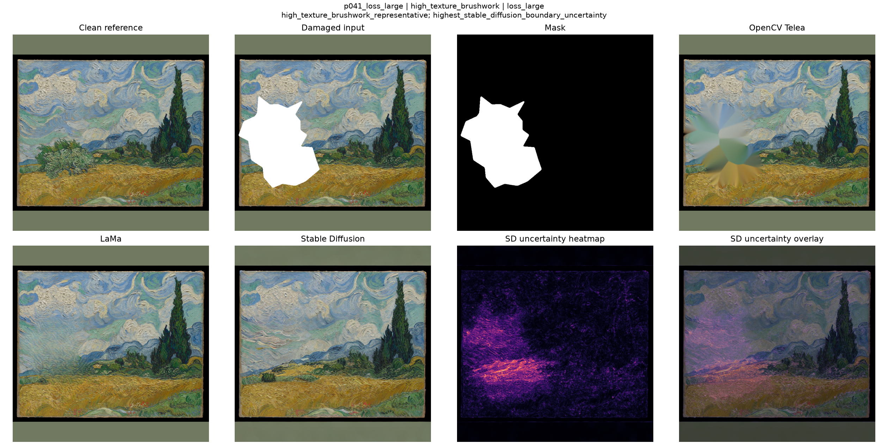
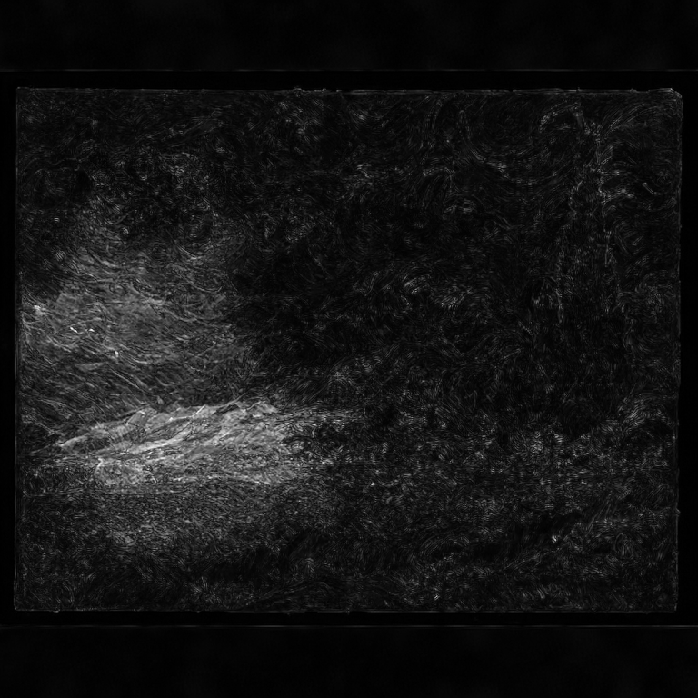
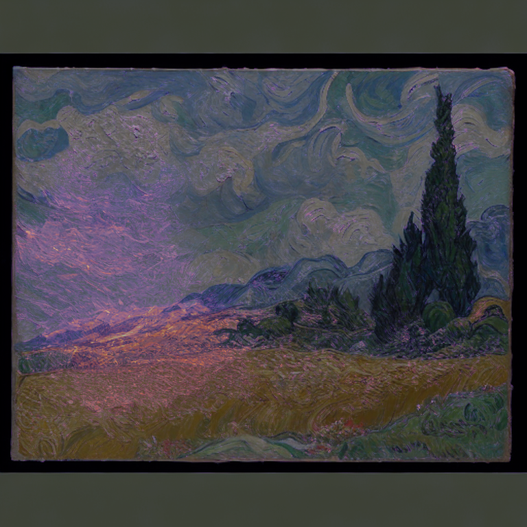

| overall_metric_vote | tie_lama_opencv_telea |
|---|---|
| opencv_telea_metric_wins | 3 |
| lama_metric_wins | 3 |
| stable_diffusion_inpainting_metric_wins | 0 |
| mixed_metric_outcome | True |
| has_texture_disagreement | True |
|---|
| has_uncertainty_heatmap | True |
|---|---|
| uncertainty_masked_mean_uncertainty | 16.1996 |
| uncertainty_masked_p95_uncertainty | 31.8980 |
| uncertainty_bbox_mean_uncertainty | 11.1285 |
| uncertainty_bbox_p95_uncertainty | 27.8438 |
| uncertainty_boundary_mean_uncertainty | 10.0671 |
| uncertainty_boundary_p95_uncertainty | 21.5102 |
| uncertainty_outside_mask_mean_uncertainty | 3.3672 |
| uncertainty_outside_mask_p95_uncertainty | 9.6283 |
| uncertainty_masked_vs_global_mean_uncertainty_ratio | 3.3454 |
| uncertainty_boundary_vs_global_mean_uncertainty_ratio | 2.0789 |
| uncertainty_selected_selection_reasons | highest_boundary_uncertainty |


| clean_image_path_relative | data/processed/clean/p041_clean.png |
|---|---|
| damaged_image_path_relative | data/processed/masked/p041_loss_large_damaged.png |
| mask_image_path_relative | data/processed/masks/p041_loss_large_mask.png |
| opencv_image_path_relative | data/processed/restored/opencv_telea/p041_loss_large_restored_opencv_telea.png |
| lama_image_path_relative | data/processed/restored/lama/p041_loss_large_restored_lama.png |
| stable_diffusion_image_path_relative | data/processed/restored/stable_diffusion_inpainting/p041_loss_large_restored_stable_diffusion_inpainting.png |
| uncertainty_heatmap_png_path | outputs/figures/uncertainty_heatmaps/heatmap_images/p041_loss_large_uncertainty_heatmap.png |
| uncertainty_overlay_png_path | outputs/figures/uncertainty_heatmaps/overlay_images/p041_loss_large_uncertainty_overlay.png |
| case_diagnostic_grid_path | outputs/figures/case_diagnostics/selected_case_grids/p041_loss_large_case_diagnostic_grid.png |
This case report combines visual outputs and diagnostic summaries already generated in earlier notebooks. It is intended for inspection and thesis reporting, not as a new metric computation.